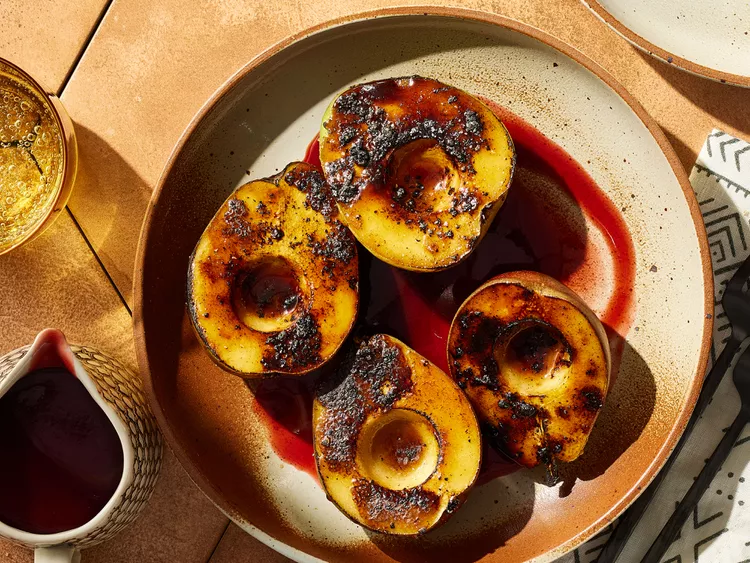

Charred Spiced Pears with Smoky Vanilla-Cherry Sauce

Description
Toasted vanilla meets torched ripe pears in these charred spiced pears with smoky vanilla-cherry sauce, a subtly sweet finisher. Use a vanilla bean that’s moist and pliable—if it’s too dry, it will ignite when you torch it. Use pears at peak ripeness; the juices will help the brown sugar adhere.
Prep Time: 15 minutes
Cook Time: 30 minutes
Servings: 8
Ingredients
- 1 vanilla bean
- 1/2 cup brandy
- 10 ounces frozen tart red cherries, thawed
- 1/2 cup packed brown sugar
- 3/4 teaspoon ground ginger
- 1/4 teaspoon ground allspice
- 1/4 teaspoon freshly ground black pepper
- 1/8 teaspoon salt
- 1 tablespoon water
- 2 teaspoons cornstarch
- 4 ripe pears, halved lengthwise and cored
Steps
- Put vanilla bean on a foil-lined baking sheet set on a wire rack. Toast vanilla bean with a kitchen torch, turning occasionally, until lightly charred and starting to smoke, about 30 seconds. Let cool 5 minutes. Split vanilla bean lengthwise.
- Combine split vanilla bean and brandy in a medium saucepan. Carefully bring to a simmer over medium-high heat. Reduce heat to medium; cook, stirring occasionally, until brandy is reduced to 2 tablespoons, 7 to 8 minutes. Meanwhile, blend cherries in a blender or food processor until smooth.
- Stir together brown sugar, ginger, allspice, and pepper in a shallow bowl. For sauce, add 3 tablespoons brown sugar mixture, the puréed cherries, and salt to brandy mixture in saucepan. Return to a boil; reduce heat to medium and simmer, stirring occasionally, until sugar is dissolved, about 3 minutes.
- Remove vanilla bean from sauce; scrape out seeds. Stir seeds into sauce, then strain through a fine-mesh sieve. Return sauce to saucepan.
- Whisk together water and cornstarch. Add to sauce. Bring to a boil over medium heat; reduce heat to medium-low. Cook, stirring constantly, until thickened, about 2 minutes. Remove from heat.
- Dip cut sides of pears in remaining brown sugar mixture to coat evenly. Arrange pears, cut sides up, on prepared baking sheet. Brown sugared surface of pears with a kitchen torch, about 5 minutes for entire recipe. Serve pears with sauce. (Chill sauce in an airtight container up to 5 days.)
Sourced from: allrecipies
Return to Home Page